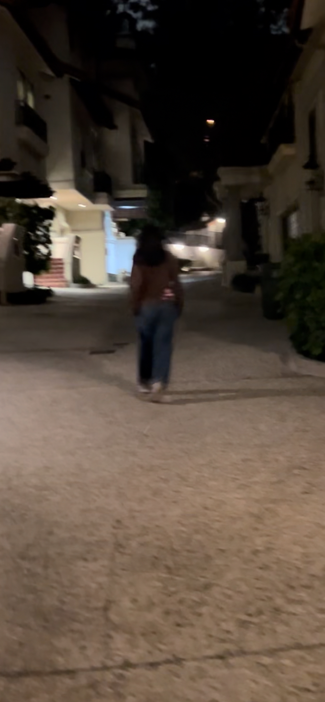

Jocelyn's Second Semester Scavenge

1/19/24: Last week, Mr. J. Poole gave the classroom a presentation on chemical engineering. It wasn't as complicated as I had expected. This week, we started talking about this quarter's project--a mousetrap or Arduino car. My partner, Sally, and I chose the Arduino car since our friend Emma advised us that the mousetrap car is harder than it seems. I don't know why I picked the Arduino car because it seems really hard. I do NOT believe in myself, but I DO believe in Sally so let's hope she knows what she's doing...
1/26/24: This week was quite difficult... The project we started is very hard and my partner and I have NO idea what we're doing. The Arduino car was so many components, but at the same time... so little. Am I the problem? Or is everyone having trouble? I hope everyone is so that I'm not just a silly billy. We're hoping to finish up our CAD next week, but that's being generous. Haha!


2/6/24: Last week, my partner and I worked hard on our Arduinos. We wired our breadboard and coded the Arduino. This week, our goal is to solder the wheels' wires to the motors. We're hoping to also work on the design of our car and hopefully have all the parts cut out by Friday. During the weekend, I grinded on my AP European history outline because I was very behind. I felt proud of myself because I got a lot done, until I realized I wasn't on part 4 out of 5. I was on part 3. Ha ha ha.
2/13/24: Last week, we were having trouble with the Arduino and I don't even really remember clearly what we did. I think we coded a teensy weensy bit and the wheels started moving. We also soldered. To improve, I can try to better understand the code and what it does (I am sooooooooooooooo lost).

2/26/24: The last 2 weeks, my partner and I #GRINDED! We worked very hard on our Arduino car. We soldered, we connected wires, we coded, we were on that #GRIND. Our car was a box with two wheels underneath so it tilted when moving. We put a face on the front side to give it character. The hardest parts about the Arduino car knowing where each wire went and coding the car. We weren't sure what wires connected to the motor driver, where they connected to the motor driver, what wires connected to positive/negative, and which wires plugged into where on the Arduino. My partner and I knew nothing about coding, but after some time my partner understood some of the code. We copied the code from the guide website Mr. Poole gave and adjusted different parts with the help of Mr. Poole.


3/4/24: The new project Mr. Poole. has assigned is called the egg-drop project. My group and I are supposed to protect an egg so much that when it's dropped from the third floor, it survives the fall. We are going to cover an egg in cotton balls, secure it in a cardboard triangular prism (with straws and popsicle sticks) and connect 2 balloons to it to slow the fall down. With the cotton cushioning it and restricted movement, the egg will be able to drop safely. I'm scared that the pyramid will come apart during the fall and the egg will just fly out or something. I think the weakest part of our design is the string connecting the balloon to the cardboard. What's stopping it from disconnecting? It's only connected by tape.

3/13/24: Our egg drop was so sad. It fell and began to bleed. You'd never expect to see a cardboard pyramid bleed, but it did... It was like a part of me broke. Rebegga died doing what she loved most--being an egg. I had so much hope for this project. Maybe we needed more padding or something... During spring break, I'm hoping to play games and eat a lot of good food. I also hope I can go out with my friends and make fun memories.

3/29/24: We started the gutter boat project. We are supposed to make a boat that can travel 500 cm down a gutter. We have limited materials and it needs to fit in the dimensions that Mr. Poole gave us. My group is going to make an origami boat out of the construction paper and add a sail with a straw, tissue, and a pipe cleaner. I expect our boat to not travel the entire distance, but at least half of it. That will make me proud enough. We are only given 4 breaths if our way of moving the boat is blowing.


My favorite part of spring break was going to Six Flags with my friends. I really pushed my limit and rode so many scary rides. It was so scary, but it was also really fun and worth it. I got sick right after it so that was really sad.
I want to get straight As by the end of the school year. I also want to get a 3 on my AP EURO exam. I just want to make my mom proud so she can brag about me to her friends and other relatives. Also, then I will really for sure become her favorite child. My brothers won't even be considered competition.
4/5/24: We finished up our gutter boat and had it sail in the gutter. We made a CAD, we got our materials, and we put it together. We tested it out in a bucket (we were not supposed/allowed to) and realized it immediately tipped over. We quickly made a solution to that problem. We made a boat for our boat using a cup. Our boat did OK. Better than others, but still kinda bad. It traveled 80 cm out of the 500 cm. If the project's graded by distance traveled, we would get a 16%. That's like a F---------... It could've had a better shape (?) to make it balanced and if it more easily caught air. Oh man, we did so sad...

My favorite part about this class was the teacher. The teacher made kinda boring lessons/units seem fun. He made them mostly easy to understand and I never felt stupid in this class (except for when we did electrical engineering). He also never made any question seem like a silly/useless question, so I was never afraid to ask anything. My least favorite part of this class was anything to do with electrical engineering. I didn't understand the wiring and different ways of wiring. It was a very hard lesson for me :- (. The Arduino car project was SO FLIPPIN' HARD BOI, but Mr. Poole was extremely helpful in like everything.
I'm planning to do my homework and GRINDING ON MY GAMING ACCOUNTS BOI. I hope to get back up to silver in valorant HAHAHAHAHAHAAHhnAHAIHASadai;ohf;oids. I'm gonna chill also all day B- )
4/15/24: We've started a project where we have to make a cardboard boat out of cardboard and duct tape ONLY. I'm excited to watch Sally and Emma ride inside the boat and sail. I'm also excited to decorate the boat (we're planning to make it look like a belly-up shark). Last week, we had a challenge where we maka post-it note bridge as long as possible. My partner and I won, exceeding 19 tiles (barely... i think idk). I was so proud. We first cute the post-it notes into 1/3s, put them together, and then cut that all in half.

I'M EXCITED TO BE ON SUMMER BREAK!!! I can't wait to lounge around and play with my friends all day everyday. School-wise, I am looking forward to not having homework in any classes after the lessons are all over and all we have to do is study, but I don't even really study because I'm naturally smart.
4/26/24: For the past 2 weeks, my group and I have been hard at work on our project. Emma was gone for, like, half of the time we worked on the project, but that's okay. Sally and I still made a lot of progress without them. We finished up our CAD to the best of our abilities. We also started measuring and cutting out the parts of our boat. We still have a long way to go since we're missing the base of the boat and a few other parts, but I'm sure we can finish those up efficiently. I'm afraid that our boat might be too weak to be able to support Sally and Emma well. I'm also worried that the boat will absorb water, get weaker, and end up ruined. It also might not be fast and I'm not sure how we'll even make it go across the pool quickly and safely at the same time. I'm excited to start putting our boat together in the next few weeks and see it really become a boat. I also hope we'll have time to decorate the boat a tiny bit. I'm also just excited to get the AP EURO exam (May 10th) over with and have that weight lifted off my shoulders... A stereotype people have placed on me that I've overcome is that since I'm lazy, I'm not a good student. That is wrong though! Although I'm lazy and get distracted easily, I haven't had a missing assignment at all (that I can remember at least...). I get my work done and I don't get bad grades on my tests.